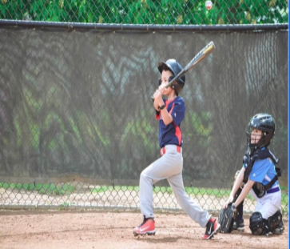

I've been playing Baseball ever since I was 7. I started with T-ball and played at hiwatha park, which was really close to my house at the time. My sister used to play softball, I looked up to her and was inspired to play baseball. I would go to camps, and play in a park league. I won my first championship in 2022 fall ball. From when I started to now I've improved so much and I plan to get even better
